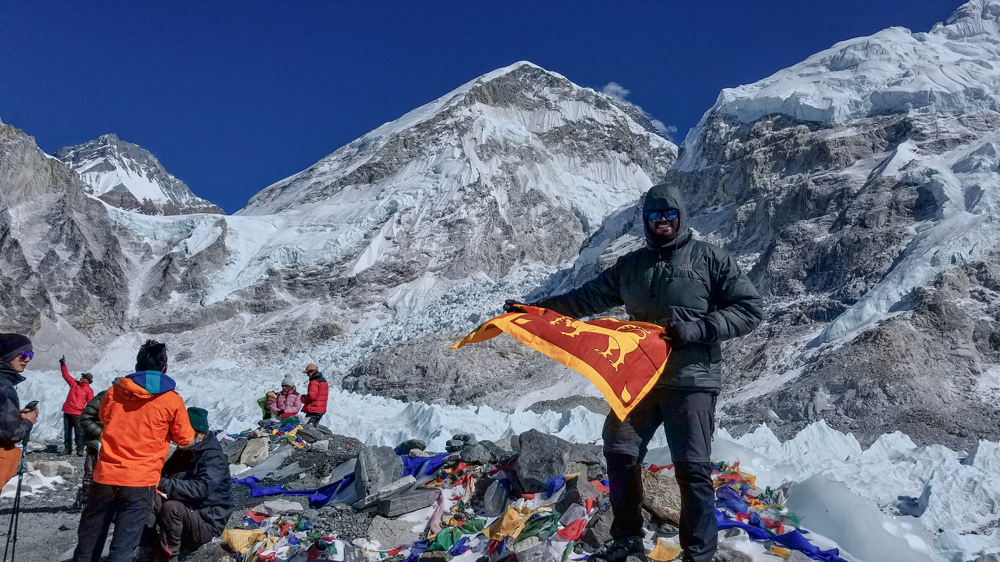
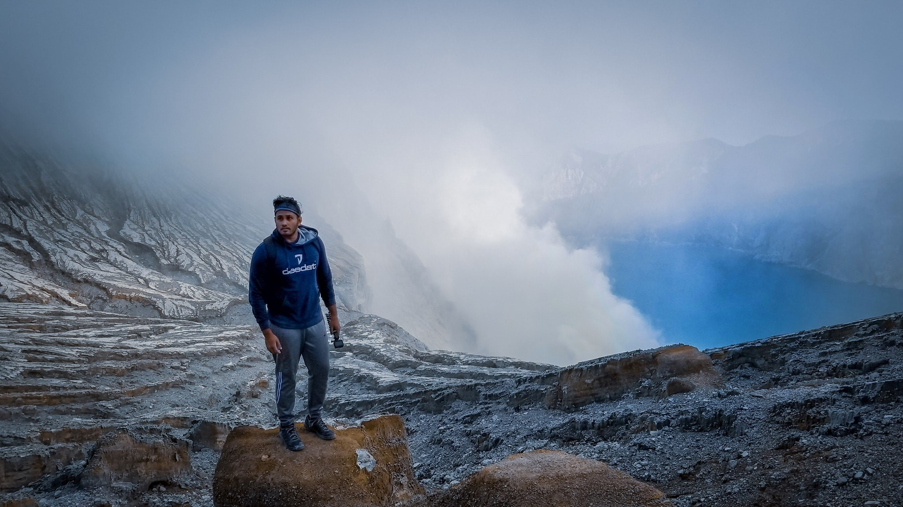
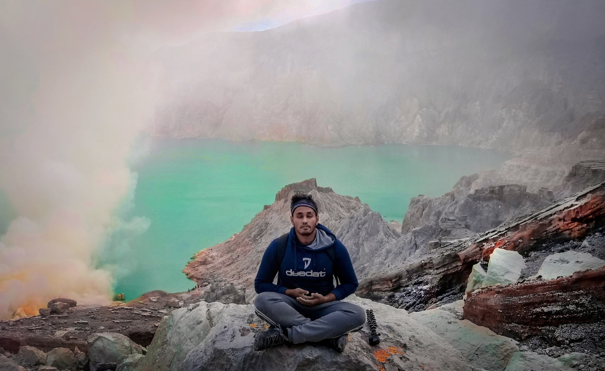
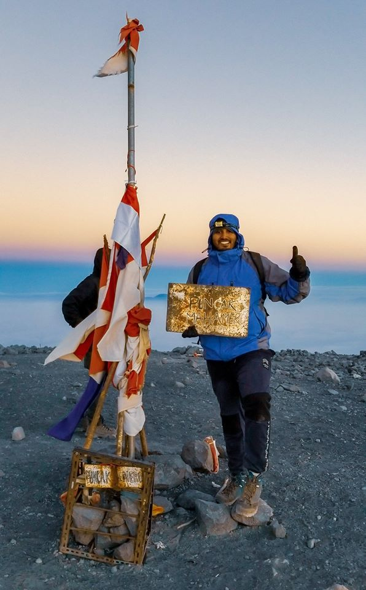
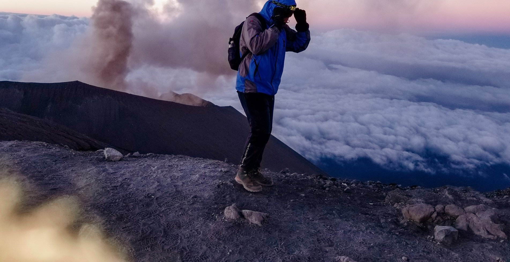
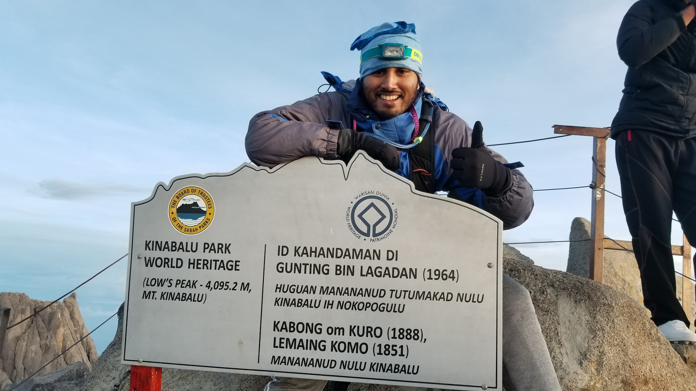
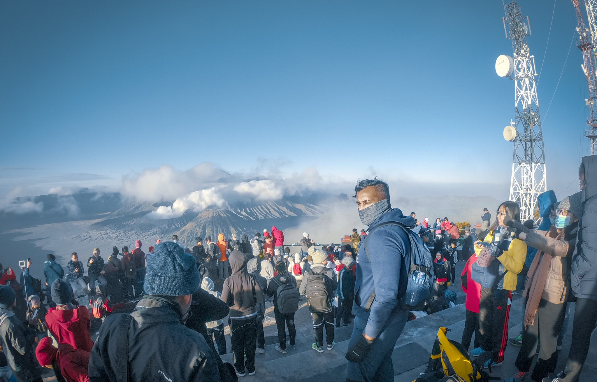
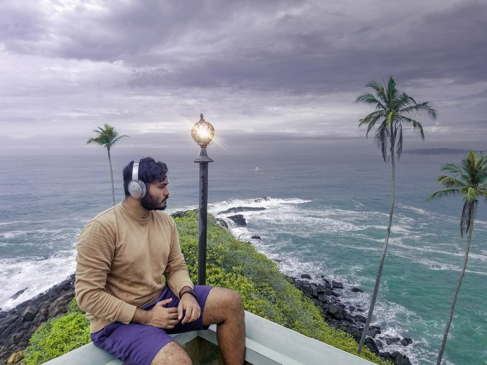

Lakmal Buddika Meegahapola
I'm a 4th year PhD Student at the School of Engineering of École polytechnique fédérale de Lausanne (EPFL) and a Research Assistant in the Social Computing Group of Idiap Research Institute advised by Prof. Daniel Gatica-Perez. Previously, I was a Research Intern at the AI Research Lab (Data and Devices Group, Social Dynamics Group) of Nokia Bell Labs (Cambridge, UK) between June and August of 2022, and was a Visiting Researcher at the Mobile Systems Group of University of Cambridge, hosted by Prof. Cecilia Mascolo, between January and August of 2022. Moreover, I will join Google Research (Mountain View, CA, USA) as a Research Intern for the fall of 2022.
I am a computer/data scientist interested in multidisciplinary research in the intersection of ubiquitous computing, mobile and wearable sensing, healthcare, HCI, and machine learning. Working with multimodal signals and data streams from smartphones, wearables, and IoT systems, I use, adapt, and extend techniques from classic machine learning, deep learning, and statistics to sense and reason (a) mental well-being (mood, stress, fatigue); and (b) behavior and context (activity recognition, eating and drinking behavior and related context) in a fair and diversity-respectful manner. So, in my current work, I look into personalization and generalization of ML models for mobile health sensing inferences.
Before starting my PhD, I worked as a Research Engineer at SMU-CMU Living Analytics Research Centre in Singapore Management University (SMU), Singapore under the supervision of Prof. Archan Misra. I got my BSc in Computer Science and Engineering with a 1st class from University of Moratuwa, Sri Lanka in 2018.
My work has been recognized at prestigious events such as Microsoft Imagine Cup World Finals , Asia Pacific ICT Alliance (APICTA), and National Best Quality ICT Awards (NBQSA, Sri Lanka) and has been covered by local and international press. Further, I was a member of the Sri Lankan International Olympiad team for Astrophysics.
NOTE: If you are a masters/exchange student at EPFL interested in a semester project/MS thesis project on using data science and machine learning for research in the intersection of multimodal sensing, healthcare, and well-being, feel free to drop me an email.
I have studied at:
I have worked at:
I have collaborated with researchers from:
More Information:
Mini Lecture Series on the topic "Smartphone Sensing for the Well-being of Young Adults" (Paper, Video Link)
News
| 2022 June | I will be a member of the technical program committee (TPC) of WellComp 2022 workshop, which will be held at Cambridge, UK (and remote) on the 15th of September 2022, during the ACM UbiComp 2022 conference. Please consider submitting your work! |
| 2022 June | I joined Nokia Bell Labs (Cambridge, UK) as a Research Intern for the summer of 2022. I am working on an exciting project at the intersection of wearable sensing, behavioral and mental health, and machine learning. |
| 2022 May | Super excited to announce that our paper titled "Sensing Eating Events in Context: A Smartphone Only Approach" got accepted to the IEEE Access journal (Impact Factor: 3.75) . This is a collaborative work done with University of Moratuwa, Sri Lanka and IPICYT, Mexico. |
| 2022 March | Excited to share that I have accepted an offer to join Google Research (Mountain View, CA, USA) as a Student Researcher/Research Intern for the fall of 2022. Looking forward to working on an exciting project at the intersection of smartphone sensing and machine learning. |
| 2022 March | Excited to share that I have accepted an offer to join Nokia Bell Labs (Cambridge, UK) as a Research Intern for the summer of 2022. Looking forward to working on an exciting project at the intersection of wearable sensing, signal processing, and machine learning. |
| 2022 February | I gave an invited talk on "Smartphone Sensing for Healthcare" at the Digitalization Week of the University of Lausanne (UNIL), Switzerland. It was an exciting opportunity to talk to people from a range of backgrounds incl. law, social science, and ethics about how AI & sensing impact our lives and privacy. |
| 2021 December | Super excited to share that soon I will be starting as a Visiting Researcher at Mobile Systems Group of the University of Cambridge! I will work with Prof. Cecilia Mascolo at the intersection of smartphone sensing, machine learning, and mental health. |
| 2021 December | I gave a talk on the topic "Smartphone Sensing for the Well-being of Young Adults" at the KnowDive Seminars Series organized by the Knowdive Group of the University of Trento, Italy. Video of the talk can be found here. |
| 2021 October | Excited to share that I've been chosen as a nominee from EPFL for the IBM PhD Fellowship 2022 under the topic "Secure and Trusted AI". |
| 2021 September | I presented two papers (One More Bite , Social Context of Drinking ) at this years ACM Ubicomp 2021 conference. |
| 2021 April | Super excited to announce that our paper titled "Examining the Social Context of Alcohol Drinking in Young Adults with Smartphone Sensing" got accepted to the ACM IMWUT journal. This work will be presented at the ACM UbiComp 2021 conference. |
| 2021 April | Our paper titled "The Theory, Practice, and Ethical Challenges of Designing a Diversity-Aware Platform for Social Relations" has been accepted to the AAAI/ACM Conference on Artificial Intelligence, Ethics, and Society (AIES) 2021. This collaborative work was done as part of the "WeNet – The Internet of Us" project, with wonderful colleagues from the University of Tuebingen, University of Trento, Aalborg University, EPFL (École polytechnique fédérale de Lausanne), Idiap Research Institute, and IPICyT. |
| 2021 April | Our paper titled "Ten Seconds of My Nights: Exploring Different Methods to Measure Brightness, Loudness and Attendance and Their Associations with Alcohol Use using Short Video Clips" got accepted to the PLOS ONE journal. This work was a collaboration between EPFL and Idiap Research Institute (Switzerland), Addiction Switzerland (Switzerland), and La Trobe University (Australia). |
| 2021 January | Our paper titled "One More Bite? Inferring Food Consumption Level of College Students using Smartphone Sensing and Self-Reports" has been accepted for publication at ACM IMWUT journal. The paper will also be presented at UbiComp 2021. This work was a collaboration between EPFL and Idiap Research Institute (Switzerland), IPICYT (Mexico), and University of Trento (Italy). |
| 2020 December | Our paper titled "Smartphone Sensing for the Well-being of Young Adults: A Review" has been accepted for publication at IEEE Access journal (impact factor 3.745 in 2019) |
| 2020 October | Our paper titled "Alone or With Others? Understanding Eating Episodes of College Students with Mobile Sensing" has been accepted to the 19th ACM Conference on Mobile and Ubiquitous Multimedia (MUM) 2020. Acceptance rate is 39%. |
| 2020 October | Our paper titled "Protecting Mobile Food Diaries from Getting to Personal" has been accepted to the 19th ACM Conference on Mobile and Ubiquitous Multimedia (MUM) 2020. Acceptance rate is 39%. |
| 2020 September | Our paper titled "Jointly Optimizing Sensing Pipelines for Multimodal Mixed Reality Interaction" has been accepted to the 17th IEEE Conference on Mobile Ad-Hoc and Smart Systems (MASS) 2020. This work was done in collaboration with Singapore Management University, Singapore and University of Moratuwa, Sri Lanka. Acceptance rate is 30%. |
| 2020 June | Happy to announce that I passed my candidacy exam at School of Engineering, EPFL. Thanks a lot Prof. Daniel and colleagues at EPFL & Idiap for your advice and support. |
| 2020 February | I have been selected as an "Exemplary Reviewer" of IEEE Wireless Communications Letters journal for the year 2019 for the high quality review work. |
| 2020 February | Attended WENET Project meeting at University of Trento, Italy. |
| 2019 November | Paper titled "PokeME: Applying Context-Driven Notifications to Increase Worker Engagement in Mobile Crowd-sourcing" was accepted to ACM SIGIR CHIIR 2020. |
| 2019 November | Paper titled "Change Detection and Notification of Webpages: A Survey" was accepted to ACM Computing Surveys - The ACM Journal with highest impact factor. |
| 2019 October | I attended the WeNet project meeting at Institut d'Investigació en Intel·ligència Artificial (IIIA-CSIC), Barcelona, Spain. |
| 2019 June | Paper titled "Inferring Accurate Bus Trajectories from Noisy Estimated Arrival Time Records" was accepted to IEEE ITSC 2019. |
| 2019 June | Joined EPFL, Switzerland as a Doctoral Student. I will be working with by Prof. Daniel Gatica-Perez. During my PhD, I will work as a Research Assistant in the Social Computing Group of EPFL and Idiap Research Institute. |
| 2019 March | Paper titled "BuSCOPE : Fusing Individual and Aggregated Mobility Behaviorfor "Live" Smart City Services" was accepted to ACM MobiSys 2019. |
| 2019 March | I was offered admission to PhD in Computer Science at University of Cambridge, UK. |
| 2019 February | I was offered admission to PhD in Engineering at Swiss Federal Institute of Technology Lausanne (EPFL). |
| 2018 October | I attended UbiComp 2018 conference held in Singapore. |
| 2018 January | Joined SMU-CMU Living Analytics Research Centre at Singapore Management University (SMU) ,Singapore as a Research Engineer. I will be supervised by Prof. Archan Misra. |
| 2018 January | I graduated from University of Moratuwa, with a 1st class honours degree in Computer Science and Engineering. |
Education
École Polytechnique Fédérale de Lausanne (EPFL), Switzerland
Doctor of Philosophy (PhD), Electrical Engineering
Specialization: Ubiquitous and Mobile Computing
Thesis (Tentative): Diversity-Aware Machine Learning for Smartphone-Based Health and Behavior Sensing
Advised by: Prof. Daniel Gatica-Perez
University of Moratuwa, Sri Lanka
Bachelor of Science (BSc) in Engineering
Major: Computer Science and Engineering
Thesis: Change Detection and Notification of Web Pages
Advised by: Dr. Dulani Meedeniya, Dr. Indika Perera, Dr. Sampath Jayarathna
Chartered Institute of Management Accountants (CIMA), United Kingdom
Major: Management Accounting
Experience
Nokia Bell Labs, Cambridge, UK
Managers: Prof. Daniele Quercia, Dr. Michael Eggleston
University of Cambridge, UK
Hosted by: Prof. Cecilia Mascolo
Idiap Research Institute & School of Engineering, EPFL, Switzerland
Advised by: Prof. Daniel Gatica-Perez
SMU-CMU Living Analytics Research Centre, Singapore
Advised by: Prof. Archan Misra
Collaborations: Prof. Mirco Musolesi
(University College London), Associate Prof. Leman Akoglu (Carnegie Mellon University)
Innoscripta GmbH, Germany
Selected Publications
-
Sensing Eating Events in Context: A Smartphone-Only Approach
L. Meegahapola*, W. Bangamuarachchi*, A. Chamantha*, S. Ruiz-Correa, I. Perera, D. Gatica-Perez (*: Co-Primary)
IEEE Access, 2022 [Impact Factor: 3.75]
-
Examining the Social Context of Alcohol Drinking in Young Adults with Smartphone Sensing
L. Meegahapola, F. Labhart, T.T. Phan and D. Gatica-Perez
ACM on Interactive, Mobile, Wearable and Ubiquitous Technologies (IMWUT/ Ubicomp), 2021
-
The Theory, Practice, and Ethical Challenges of Designing a Diversity-Aware Platform for Social Relations
L. Schelenz, I. Bison, M. Busso, A. de Götzen, D. Gatica-Perez, F. Giunchiglia, L. Meegahapola and S. Ruiz-Correa
AAAI/ACM Conference on Artificial Intelligence, Ethics, and Society (AIES) 2021
-
Ten Seconds of My Nights: Exploring Different Methods to Measure Brightness, Loudness and Attendance and Their Associations with Alcohol Use using Short Video Clips
F. Labhart, L.B. Meegahapola*, S. Muralidhar*, B. Masse*, E. Kuntsche, D. Gatica-Perez (* = equal contribution)
PLOS ONE, 2021 [Impact Factor: 3.24]
-
One More Bite? Inferring Food Consumption Level of College Students using Smartphone Sensing and Self-Reports
L.B. Meegahapola, S. Ruiz-Correa, V.C. Robledo-Valero, E.E. Hernandez-Huerfano, L. Alvarez-Rivera, R. Chenu-Abente, D. Gatica-Perez
ACM on Interactive, Mobile, Wearable and Ubiquitous Technologies (IMWUT/ Ubicomp), 2021
-
Smartphone Sensing for the Well-being of Young Adults: A Review
L.B. Meegahapola, D. Gatica-Perez
IEEE Access, 2021 [Impact Factor: 3.75]
-
Protecting Mobile Food Diaries from Getting too Personal
L.B. Meegahapola, S. Ruiz-Correa, D. Gatica-Perez
ACM Conference on Mobile & Ubiquitous Multimedia (MUM), Essen, Germany, 2020 [Acceptance Rate: 39%]
-
Alone or With Others? Understanding Eating Episodes of College Students with Mobile Sensing
L.B. Meegahapola, S. Ruiz-Correa, D. Gatica-Perez
ACM Conference on Mobile & Ubiquitous Multimedia (MUM), Essen, Germany, 2020 [Acceptance Rate: 39%]
-
Jointly Optimizing Sensing Pipelines for Multimodal Mixed Reality Interactions
D. Rathnayake, A.K. De Silva, D. Puwakdandawa, L.B. Meegahapola, A. Misra, I. Perera
IEEE Conference on Mobile Ad-Hoc and Smart Systems (MASS), Delhi, India, 2020 [Acceptance Rate: 30%]
-
Change Detection and Notification of Webpages: A Survey
V.G. Mallawaarachchi, L. Meegahapola, R.M. Alwis, E.H. Nimalarathna, D. Meedeniya, S. Jayarathne
ACM Computing Surveys (CSUR), 2020 [Impact Factor: 10.282]
-
PokeME: Applying Context-Driven Notifications to Increase Worker Engagement in Mobile Crowd-sourcing
T. Kandappu, A. Mehrotra, A. Misra, M. Musolesi, S.F. Cheng, L. Meegahapola
ACM SIGIR Conference on Human Information Interaction and Retrieval (CHIIR), British Columbia, Canada, 2020 [Acceptance Rate: 38%]
-
Inferring Accurate Bus Trajectories from Noisy Estimated Arrival Time Records
L. Meegahapola, N. Athaide, K. Jayarajah, S. Xiang, A. Misra
IEEE Intelligent Transportation Systems Conference (ITSC), Auckland, New Zealand, 2019
-
BuSCOPE: Fusing Individual \& Aggregated Mobility Behavior for ``Live'' Smart City Services
L. Meegahapola, T. Kandappu, K. Jayarajah, L. Akoglu, S. Xiang, A. Misra
ACM International Conference on Mobile Systems, Applications, and Services (MobiSys), South Korea, 2019 [Acceptance Rate: 22.6%]
-
Can Multimodal Sensing Detect and Localize Transient Events?
K. Jayarajah, V. Subbaraju, N. Athaide, L. Meegahapola , A. Tan, and A. Misra
SPIE Defence + Commercial Sensing, Orlando, USA, 2018
-
Random Forest Classifier based Scheduler Optimization for Search Engine Web Crawlers
L.B. Meegahapola, R.M. Alwis, E.H. Nimalarathna, V.G. Mallawaarachchi, D. Meedeniya, S. Jayarathne
ACM International Conference on Software and Computer Applications (ICSCA), Kuantan, Malaysia, 2018
-
Cognitive Analysis of 360 Surround Photos
M. Vidanapathirana, L.B. Meegahapola, I. Perera
IEEE Future Technologies Conference (FTC), Vancouver, Canada, 2017 [Acceptance Rate: 30.4%]
-
Adaptive Technique for Web Page Change Detection using Multi-Threaded Crawlers
L.B. Meegahapola, R.M. Alwis, E.H. Nimalarathna, V.G. Mallawaarachchi, D. Meedeniya, S. Jayarathne
IEEE International Conference on Innovative Computing Technology (INTECH), London, United Kingdom, 2017 [Acceptance Rate: 34%]
-
Enhanced In-Store Shopping Experience through Smartphone based Mixed Reality Application
L.B. Meegahapola, I. Perera
IEEE International Conference on Advances in ICT for Emerging Regions (ICTer), Colombo, Sri Lanka, 2017
Selected Awards & Achievements
- IBM PhD Fellowship - EPFL Nominnee (nominated under the topic "Secure and Trusted AI")
- Exemplary Reviewer (Top 3% of Reviewers) - IEEE Wireless Communications Letters Journal
- 2nd place in world - Microsoft Imagine Cup World Finals 2016 - Seattle, USA
- Represented Sri Lanka - 5th International Olympiad on Astronomy and Astrophysics (IOAA) 2011 - Katowice, Poland
- Best paper honourable hention (Top 3 papers) - 30th ISCA CAINE 2017 - San Diego, USA
- Best paper of the track - 7th ACM ICSCA 2018 - Kuantan, Malaysia
- Nominee for best tertiary project - Asia Pacific ICT Alliance (APICTA) 2016- Taipei, Taiwan
- 1st place (Media-Saturn track)- HackaTUM 2016- Munich, Germany
- 1st place & Gold medal - National Astrophysics Olympiad 2011
- 6st place & Bronze medal - National Astrophysics Olympiad 2010
- Bronze medal - National Physics Olympiad 2012
- 3rd place & Bronze award in tertiary category - 18th National Best Quality ICT Awards 2016
- 1st place - Microsoft Imagine Cup National Finals 2016 (Innovation Category)
- 1st place - Microsoft Imagine Cup National Finals 2016 (Games Category)
- 2nd place - Microsoft Imagine Cup National Finals 2016 (World Citizenship Category)
- 2nd place - Microsoft Imagine Cup National Finals 2017
- 1st place - Google I/O Extended Hackathon 2015
- 1st place - HackaDev 2015
- 1st place - Yarl Geek Challenge 2015
- 1st place - Ideamart Mora Hack 2015
Reviewing and Student Supervision
I've been a reviewer for top-tier journals such as ACM IMWUT, ACM Computing Surveys, ACM HEALTH, and IEEE Wireless Communications Letters and conferences such as ACM CHI. I've also had the pleasure of working with the following exceptional undergraduate and masters students.- Nathan Kammoun - MS Robotics and Data Science - Semester Project - 2022/02 to 2022/06
- Assi Karim - MS Data Science - Semester Project - 2021/09 to 2022/02
- Emma Bouton-Bessac - MS Robotics - Masters Thesis Project - 2021/09 - 2022/02
- Aurel Ruben Mäder - MS Digital Humanities - Semester Project - 2021/09 - 2022/02
- Haeeun Kim - MS Digital Humanities - Semester Project - 2021/04 to 2021/09
- Wageesha Bangamuarachchi - BSc Engineering in Computer Science and Engineering - Thesis Project - 2021/03 to 2022/05
- Anju Chamantha - BSc Engineering in Computer Science and Engineering - Thesis Project - 2021/03 to 2022/05
- Darshana Rathnayaka - BSc Engineering in Computer Science and Engineering - Thesis Project - 2019/01 to 2019/12
- Dasun Pubudumal - BSc Engineering in Computer Science and Engineering - Thesis Project - 2019/01 to 2019/12
- Ashen Kavinda De Silva - BSc Engineering in Computer Science and Engineering - Thesis Project - 2019/01 to 2019/12
- Akhitha Manjitha - BSc Engineering in Computer Science and Engineering - Thesis Project - 2019/01 to 2019/12
- Maya Guido - BSc Computer Science - Semester Project - 2022/02 to Present
Selected Press Coverage
-
AI and an app to understand drinking habits among young adults
April 2021 - le nouvelliste, 20min.ch, planetesante, Idiap News, ictjournal.ch, netzwoche.ch, rhonefm.ch -
Evaluating effects of COVID-19 lockdown on well-being - Civique mobile app
April 2020 - CIVIQUE, EPFL News, 24heures, lfm.ch, MirageNews -
When Social Networks Become ‘Diversity-Aware’ Research Platforms
February 2020 - PYMNTS -
WENET Behavioral Mobile Sensing App Mexico Prepilot
December 2019 - El Universal, Plano Informativo, El Portal, Televisa San Luis Potosi -
Mr 360 | Lakmal Meegahapola
August 2020 - olivescript -
University of Moratuwa EXMO: Budding geniuses
May 2017 - dailynews.lk -
2016 Throwback: The Biggest Moments In Sri Lankan Tech
January 2017 - readme.lk -
Asia teams impress at Imagine Cup 2016
August 2016 - Microsoft Asia News Center -
Bit Masters & Sri Lanka win big at the Imagine Cup Finals
July 2016 - readme.lk, dailymirror.lk -
Local university students showcase innovative excellence at local Imagine Cup finals
May 2016 - sundaytimes.lk, readme.lk -
Announcing the 2016 Big Idea: Pitch Winners!
November 2015 - Student Developer Evangelism Team, Microsoft -
AMPLUS - smart ad display software wins Jaffna-based YGC
November 2015 - sundaytimes.lk, ft.lk
Hobbies
I like to travel and have been to 40 countries around the world so far. One of the things I like to do the most is hiking/trekking. Some milestones I am proud of are Everest Base Camp - Nepal (5364m), Mount Kinabalu - Malaysia (4095m), Volcano Semeru - Indonesia (3676m), Kawah Ijen - Indonesia (2799m), Augstenbern - Leichtenstein (2359m). My goal is to travel to 100 countries and to climb atleast a few 6000m+ peaks. Here are some highlights from my adventures.
       I have a youtube channel where I post my travel videos. The equipment I use are Sony A7III mirrorless camera, GoPro Hero 6, and last but no least, the DJI Mavic Air drone. Check out my videos below.
Last Updated: 20 July 2022